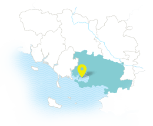
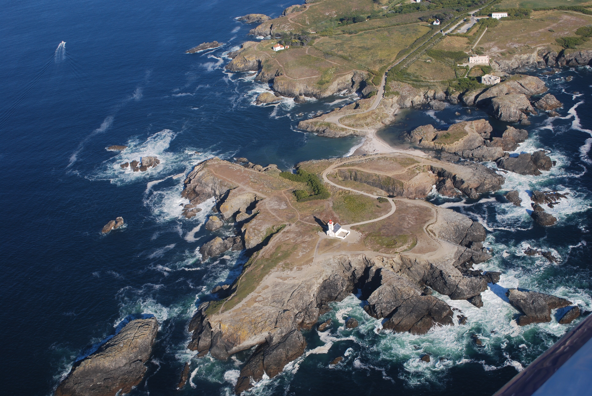
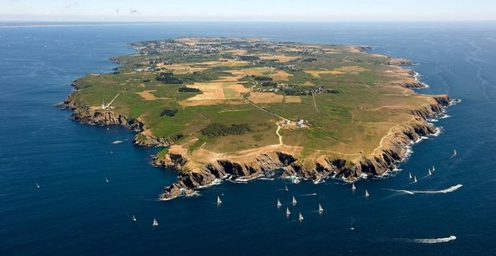
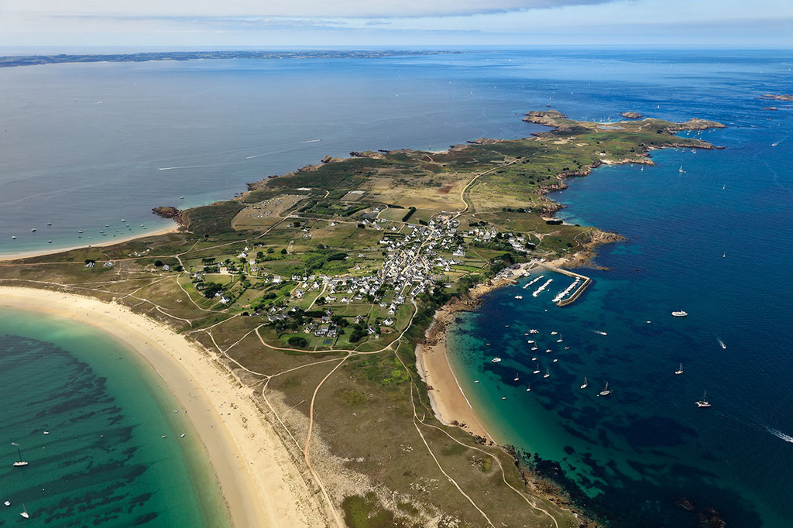
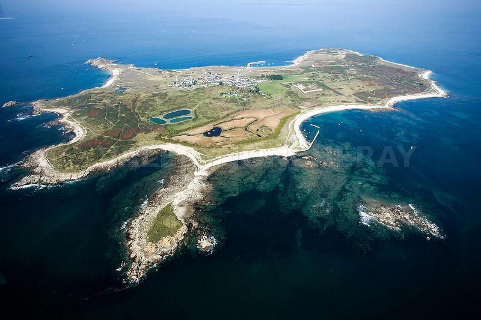
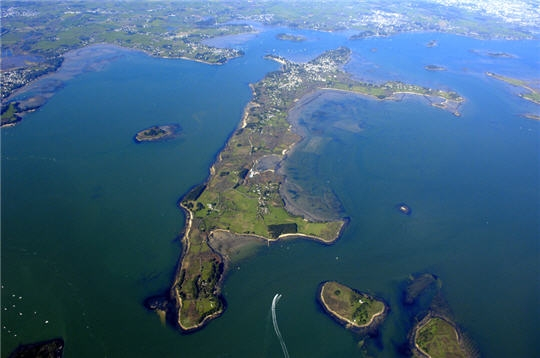

The Islands
The Gulf of Morbihan and its many islands
When Morbihan rhymes with inland sea
The Gulf of Morbihan gave its name to the department: Mor-Bihan means "small sea" in Breton. Extending by the Bay of Quiberon, this iconic place in southern Brittany belongs to the club "The most beautiful bays in the world", as well as Ha Long Bay in Vietnam and San Francisco in the United States. The Gulf offers a unique spectacle where land and sea mingle in changing landscapes over some 11,500 ha. Large expanse of sea water, the Gulf of Morbihan is an exceptional site for navigation. Take advantage of our holiday ideas to discover the joys of cabotage, and perhaps embark on an old rig.
Belle-Île at sea, a preserved nature
 From north to south, from east to west, its 85 km2 make Belle-Ile the largest of the Ponant Islands, and probably the most surprising also by the variety of decorations it offers. From the sand dunes of the beach of Donnant to the sculpted cliffs of Pointe de Taillefer or the Colts, Belle-Ile offers a remarkable spectacle, immortalized by many artists, painters or poets: here the Aiguilles de Port Coton stand in front of Atlantic ; there a colony of kittiwakes and herring gulls plays with spray; further on, Citadelle Vauban evokes a beautiful lesson in architecture; and alone, faced with immensity, the artist marvels ...
From north to south, from east to west, its 85 km2 make Belle-Ile the largest of the Ponant Islands, and probably the most surprising also by the variety of decorations it offers. From the sand dunes of the beach of Donnant to the sculpted cliffs of Pointe de Taillefer or the Colts, Belle-Ile offers a remarkable spectacle, immortalized by many artists, painters or poets: here the Aiguilles de Port Coton stand in front of Atlantic ; there a colony of kittiwakes and herring gulls plays with spray; further on, Citadelle Vauban evokes a beautiful lesson in architecture; and alone, faced with immensity, the artist marvels ...
The island is so rich in history, heritage and culture, there is something for everyone. The taste buds precisely, let's talk about, well-named biscuits with sardines, through beer, honey or salted butter caramel, the Bellilois gastronomy is not left out, and knows how to retain visitors.
So, do not hesitate any more, embark on a weekend of escape or a dream vacation. And at night, find the warmth of a hotel or the proximity to nature in one of the many campsites on the island. Morbihan Tourisme will help you prepare your stay, and the Bellilois will welcome you.
The highlights of the cultural life of Belle-île
Some days the ports of the islands are getting ready to celebrate the sea: music and games are waiting for you to relax. How about savoring some grilled sardines on the harbor! The sea also inspires artists, food lovers and nature lovers: tales, sculptures, taste workshops, introduction to cane fishing, discovering the life of a lighthouse keeper and the fishing port, photographs ... here is a very wide range of animations at your disposal to better understand the sea.
Getting around Belle-Île
A very wide range of means of transport will allow you to make very beautiful discoveries in Belle-Ile. In this hikers' favorite destination -90 kms of marked coastal paths await you- it will take you about 4 days to walk around the island and discover breathtaking landscapes. For the bravest, cross the island and the valleys by bike to access the beaches and sheltered coves. To prepare for your getaways, 17 coastal and inland itineraries are listed in a hiking guide and a cycling guide, both available at the tourist office. And if you do not have your bike! Several motorized or non-motorized rental companies welcome you. Car rental companies offer a wide range of vehicles, some of which are electric. It is possible to discover the island by bus, through public transport services or coaches. As a last resort you will stay on the hitchhiking, 4 STOP points are arranged on the island.
Island of Groix
No need to cultivate its difference by artifices: it is natural that the island of Groix imposes its identity, its mysteries and its originality. A stone's throw from Lorient, discover an extraordinary island! From the time you land at Port Tudy, you will be able to feel the singularity of this land rich in history. And it is to learn more that you will come back, early in the morning, take a coffee while doing your press review, in front of the show of the boats which ensure the comings and goings of the materials and passengers. Enjoy a stay on the island of Groix to browse the streets and trails, on foot or by bike. Each pedal stroke, your eye will be attracted by the colorful facades of captains' houses. You could almost pedal your nose in the air ... Here the bike is king, and the red lights do not exist!
The highlights of the cultural life of the island of Groix
In Groix, the entertainment program is rich and varied. Depending on the year, several festive moments are proposed: harbor festival, friendship route, tuna boat trips ... the sea is always waiting for you. All these holidays will offer you in any case beautiful moments of sharing and meetings. The sea is also a source of many activities because in Groix we have always lived by the sea. Do not miss these opportunities available to you!
Move to Groix
At Groix, the pedestrian is king! The island discovers its charms in many ways at the detours of the routes. On foot, 3 marked hiking trails of 10 to 14 km each crisscross the island to better discover the natural and built heritage. By bike, 40 kms of trails are accessible and equipped with car parks, except the coastal paths prohibited by bike because of their fragility! You can also rent a bike, an electric bike or a tandem at one of the island's hirers.3 bus lines, 80, 81 and 82 serve the island all year round.
Island of Houat
In complicity with his little sister Hoëdic, Houat marks his independence, moving away from the continent to which it was originally attached. 14 km off Quiberon, you have to sail to deserve to dock on this islet which shelters 250 inhabitants in the year, and even less trees. Here, stones, moors, wind and sea reign and dialogue constantly, sometimes argue, then reconcile. You will inevitably surprise bits of their exchanges during your walk along the coast and on the beaches: just know how to remain attentive to seize the nuances and the secrets. He murmurs an impression of the end of the world ...
The highlights of cultural life
Here too, the sea and nature are at the heart of the festivities. The Eclosarium is a museum space that offers an exceptional and original dive into a drop of sea water to discover the world of plankton, so important for life in the oceans! It is also a great opportunity to discover all the riches of the island.
To move to Houat
Houat is discovered only on foot or by bike because motor vehicles are prohibited on the island. What better way to discover the riches of the island! Here nature is omnipresent, everything feels good sea. To rent a bike, contact Annick Le Fur 02 97 30 66 64 or take a municipal bus that can ensure your travel from the port to the village or the campsite.
So take advantage of your stay to fully immerse yourself in the motto of Houat: "Ag er mor e viuamb" ("sea, we live").
Island of Hoëdic
2.5 km long and only 1 km wide, the island of Hoëdic seems frail and fragile in the heart of the Atlantic Ocean. But this little drop of earth in the middle of the waves does more than hold good: it expresses its character in harmony with the elements, sometimes soft and fragile with its beaches of fine sand with turquoise waters, and sometimes strong and tempestuous with its rocks and its fortifications. It is besides between the walls of the fort built in the 19th and which shelters today a lodging of stage that you will be able to find the rest during your adventurous stay. Nestled in the dunes, this property of the Conservatoire du Littoral will also allow you to discover the exceptional heritage of the island Hoëdic. Some historical architectures stand here or there, leaving all the freedom to the vegetation.
The highlights of cultural life
Every year, between Houat and Hoëdic, the 15th of August is the occasion of a great naval gathering to baptize the new boats. Each ship and fishing boat then embarks curious visitors to participate in the ceremony.
Getting around Hoëdic
In Hoëdic, you do not need a car. It is on foot that the island is discovered, winter and summer along its 8 km of coastline. The island invites you to stroll and dream. Time has stopped, enjoy!
Monk Island
A change of scenery guaranteed after only 5 minutes by boat, this is the strength of the island of the monks, pearl of the Gulf of Morbihan! As soon as you have set foot on this land bordered by the current of the Mare, considered the strongest in Europe, you will be transported to another Brittany, that looks like Greek islands! You will also find a tangle of small white fishermen's houses, laces of flowery alleys leading to a garden with sea views and an island lifestyle! Here, the bike is king, so a tip: get right now to the rhythm of the iliens, renting a bike to walk the streets and discover the 14 km of trails. You will sometimes have to get off your horse and walk the rest of the way to reach a creek where, sitting on the sand facing the elements, you will have plenty of time to think you are a great poet.
Coastal sites must-sees
 The almost southern climate enjoyed by Ile aux Moines contributes to the installation of a great diversity of plants. 350 plant species have been identified! All you have to do is go through the moors to admire this diversity. Here, the proud Asphodel of Arrondeau neighbor with the gorse with the scents of coconut at the time of the flowering. Many sparrows then take advantage of this dense vegetal cover and the bushes to live here. The island with the Monks, in the middle of large natural ensemble of the Gulf of Morbihan, is a stopover much appreciated for many birds which find there rest and food. At the detours of the ways, the landscape is changing, the sheltered handles alternate with the rocky points. It is on foot or bike that will make your best discoveries.Push up to the tip of Pen Hap in the south of the island, you will discover the Chantier du Guip, specialized in the construction and restoration of traditional boats and small yachting units.You may choose to go north to the tip of Trec'h and its famous Calvary. The large beach lined with its beach huts is close to the Bois d'amour ... it invites a lazy novel The tour of the island is less than 20 km ... enjoy its wealth in peace!
The highlights of cultural life
If the sea has deeply marked the past of Ile aux Moines as evidenced by its heritage, the inhabitants still maintain today a rhythm of life clocked by the sea, the sea and sailing festivals invite to meet with The inhabitants.And to continue what would you say about an oyster tasting at Pierre Martin at the edge of the water !!
Move on Île aux Moines
It will take you a few minutes to cross to Ile aux Moines. Once disembarked, the change of scenery is assured! You will cross a few cars on the island but here, as in all the islands, it is better to venture on foot or by bike. The Tour of the island, 17 kms long, walk in 4h15 along the hiking path. This is a unique opportunity to discover the small heritage of the island and remarkable views of the Gulf of Morbihan.If you do not have a bike, you can easily rent one on the island.
Isle of Arz
"Stand up and let's go! This is a motto that does not deceive. It must be said that the island of Arz has the character ...: that of sailors in the long course who settled here in the heart of the Gulf of Morbihan and who today offer the island its nickname of "island aux captains. The captains are now the young trainees from the Glénans sailing school who have come to settle on this land to offer the best sailing conditions. If you want to stay grounded, get ready to climb on « the Mountain ", the highest point of the island that reaches ... .13 meters! Such a drop is not likely to tire you, just like the coastal paths, very accessible, which allow to go all around the island. You will discover the wild and preserved nature of this land, second home of the geese of Siberian geese and landmark of many local species.
Coastal sites must-sees
On foot or by foot, you will have gone around the island ... it's almost a tradition when you arrive on the Ile d'Arz! The narrow streets wind between the small fishermen's houses , and at every turn remind us why the island is called the island of captains.In any case do not leave the island without making a detour to the mill Berno to discover the operation of a tide mill "to the 'Ancient ". An exceptional maritime heritage restored with passion!
The highlights of cultural life
The site of the Moulin de Berno is the end of July or early August a party with gathering of old rigs, songs of sailors and a firework on the water. A magical event: Ilur's forgiveness and seaman's mass take place on the first Sunday in August.And do not miss the traditional Gulf Week that takes place on the water every two years.
To move on the Island of Arz
The charms of the island can be discovered on foot or by bike. If necessary, you can rent one at the Arz and the way or at Arz rental. A minibus also awaits you at the arrival of the boat and will deposit you in several points of the island ... a moment of sharing with the inhabitants not to be missed!